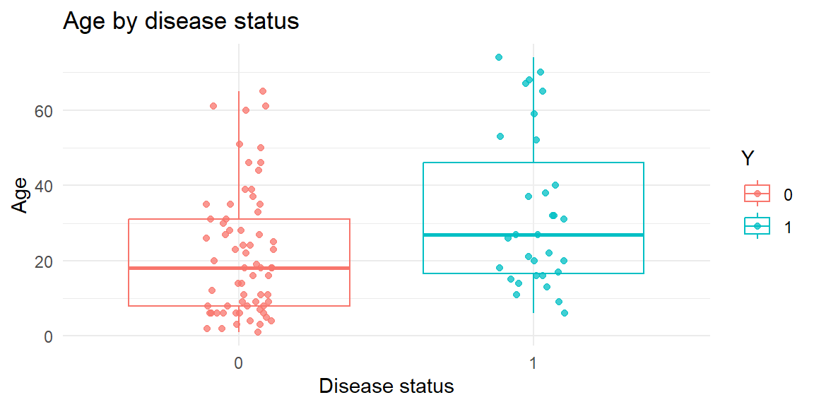
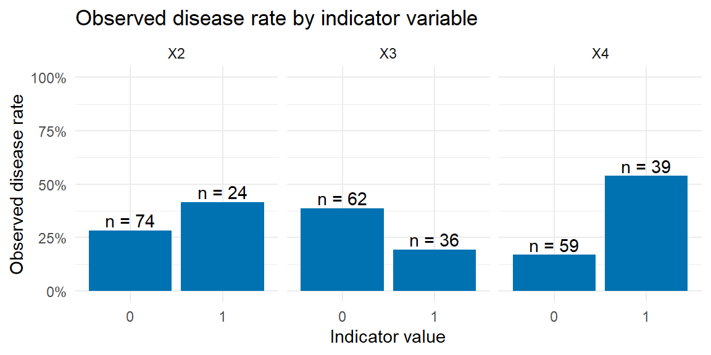
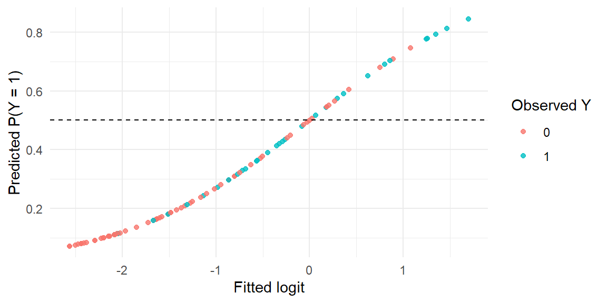

“In God we trust, all others bring data.” - W. Edwards Deming
In the previous chapter, we introduced logistic regression as a model for a binary response. This chapter shows how to fit, interpret, predict from, and evaluate a multiple logistic regression model using tidymodels.
24.1 Multiple Logistic Regression
Simple logistic regression uses one predictor. Multiple logistic regression extends the same idea to several predictors.
For observation \(i\), the model can be written as
Like the simple logistic response function, the multiple logistic response function is bounded between 0 and 1. The predictors may be quantitative variables, categorical variables represented by indicators, transformations, or interaction terms.
NoteWhat changes in multiple logistic regression?
The interpretation changes from a simple odds ratio to a partial odds ratio.
For a quantitative predictor, \(\exp(\beta_j)\) is the multiplicative change in the odds of \(Y=1\) for a one-unit increase in \(x_j\), holding the other predictors fixed.
For an indicator predictor, \(\exp(\beta_j)\) compares the odds for the group coded 1 to the odds for the reference group coded 0, holding the other predictors fixed.
24.2 Example Using Tidymodels
Example 24.1
ExampleDisease outbreak data and predictors
In a health study of an epidemic outbreak spread by mosquitoes, individuals were randomly sampled within two sectors of a city. The response variable was coded as
\(Y = 1\): disease present,
\(Y = 0\): disease not present.
The predictors are:
Variable
Meaning
\(X_1\)
Age
\(X_2\)
Indicator for middle socioeconomic class
\(X_3\)
Indicator for lower socioeconomic class
\(X_4\)
Indicator for sector 2
Socioeconomic class is represented by two indicators:
Class
\(X_2\)
\(X_3\)
Upper
0
0
Middle
1
0
Lower
0
1
Thus, upper class is the reference group. City sector is also represented by an indicator, where \(X_4=0\) represents sector 1 and \(X_4=1\) represents sector 2.
Example 24.2
ExampleLoading and exploring the disease outbreak data
We first load the data, name the variables, and code the response as a factor. The factor levels are ordered as 0, then 1, so that the fitted logit corresponds to the disease-present event, \(Y=1\).
The scatterplot matrix is useful as a broad scan, but targeted plots are often easier to interpret. The next two plots focus on age and the indicator variables.
disease_data|>ggplot(aes(x =Y, y =X1, color =Y))+geom_boxplot(outlier.shape =NA, alpha =0.15)+geom_jitter(width =0.12, height =0, alpha =0.75)+labs( x ="Disease status", y ="Age", color ="Y", title ="Age by disease status")+theme_minimal()

disease_indicator_rates<-disease_data|>mutate(event =as.integer(as.character(Y)))|>select(event, X2, X3, X4)|>pivot_longer( cols =X2:X4, names_to ="predictor", values_to ="indicator_value")|>group_by(predictor, indicator_value)|>summarize( disease_rate =mean(event), n =n(), .groups ="drop")disease_indicator_rates|>ggplot(aes(x =factor(indicator_value), y =disease_rate))+geom_col(fill ="#0072B2")+geom_text(aes(label =paste0("n = ", n)), vjust =-0.25)+facet_wrap(~predictor)+scale_y_continuous( limits =c(0, 1), labels =scales::label_percent())+labs( x ="Indicator value", y ="Observed disease rate", title ="Observed disease rate by indicator variable")+theme_minimal()

The targeted plots do not replace the model. They simply help us see how the observed disease rate relates to individual predictors before fitting the multiple logistic regression model.
Example 24.3
ExampleFitting a multiple logistic regression workflow
We can now set up the recipe, model, and workflow.
disease_recipe<-recipe(Y~X1+X2+X3+X4, data =disease_data)disease_model<-logistic_reg()|>set_engine("glm")disease_workflow<-workflow()|>add_recipe(disease_recipe)|>add_model(disease_model)disease_fit<-disease_workflow|>fit(data =disease_data)disease_fit|>tidy()|>knitr::kable(digits =4)
term
estimate
std.error
statistic
p.value
(Intercept)
-2.3129
0.6426
-3.5994
0.0003
X1
0.0298
0.0135
2.2033
0.0276
X2
0.4088
0.5990
0.6825
0.4950
X3
-0.3053
0.6041
-0.5053
0.6134
X4
1.5747
0.5016
3.1393
0.0017
The tidy() function returns the estimated coefficients on the log-odds scale. Exponentiating the coefficients gives estimated odds ratios. We can also request confidence intervals for the odds ratios.
For each one-unit increase in \(X_1\) age, the estimated odds of disease presence are multiplied by about 1.03, holding the other predictors fixed.
For middle socioeconomic class compared to upper class, the estimated odds are multiplied by about 1.50, holding the other predictors fixed.
For lower socioeconomic class compared to upper class, the estimated odds are multiplied by about 0.74, holding the other predictors fixed.
For sector 2 compared to sector 1, the estimated odds are multiplied by about 4.83, holding the other predictors fixed.
The confidence interval gives a range of plausible odds ratios. If an interval contains 1, then the data are compatible with both lower and higher odds after adjusting for the other predictors.
These are model-based associations, not automatic causal effects.
24.3 Predictions
After fitting the model, we can obtain predictions on three useful scales:
type = "raw" gives the fitted value on the logit scale,
type = "prob" gives predicted class probabilities,
type = "class" gives the predicted class using the default 0.5 probability threshold.
Example 24.4
ExamplePredicted logits, probabilities, and classes
disease_predictions<-disease_data|>select(Y)|>bind_cols(tibble( .pred_logit =as.numeric(predict(disease_fit, new_data =disease_data, type ="raw"))),predict(disease_fit, new_data =disease_data, type ="prob"),predict(disease_fit, new_data =disease_data, type ="class"))disease_predictions|>slice_head(n =10)|>knitr::kable(digits =3)
Y
.pred_logit
.pred_0
.pred_1
.pred_class
0
-1.331
0.791
0.209
0
0
-1.272
0.781
0.219
0
0
-2.134
0.894
0.106
0
0
-0.528
0.629
0.371
0
1
-2.083
0.889
0.111
0
0
-1.845
0.864
0.136
0
0
-2.440
0.920
0.080
0
1
-0.982
0.727
0.273
0
1
-1.131
0.756
0.244
0
0
-0.803
0.691
0.309
0
The .pred_1 column is the fitted probability of disease presence. The .pred_class column converts those probabilities into predicted classes.
disease_predictions|>ggplot(aes(x =.pred_logit, y =.pred_1, color =Y))+geom_point(alpha =0.8)+geom_hline(yintercept =0.5, linetype ="dashed")+labs( x ="Fitted logit", y ="Predicted P(Y = 1)", color ="Observed Y")+theme_minimal()

The dashed line marks the default 0.5 threshold. Points above the line are classified as disease present, and points below the line are classified as disease not present. Misclassification occurs when the predicted class does not match the observed class.
24.4 Confusion Matrix
A confusion matrix compares the predicted classes to the observed classes.
Example 24.5
ExampleConfusion matrix and classification metrics
disease_confusion<-conf_mat(disease_predictions, truth =Y, estimate =.pred_class)disease_confusion
Truth
Prediction 0 1
0 58 19
1 9 12
In this table, disease present is the event class, \(Y=1\). There are 9 false positives and 19 false negatives.
We can summarize the confusion matrix with several classification metrics. Because the event class is the second factor level, we use event_level = "second".
Sensitivity is the proportion of disease-present cases correctly predicted as disease present.
Specificity is the proportion of disease-absent cases correctly predicted as disease absent.
Positive predictive value is the proportion of predicted disease-present cases that truly had the disease.
Negative predictive value is the proportion of predicted disease-absent cases that truly did not have the disease.
NoteSensitivity and specificity depend on the event class
Before computing classification metrics, decide which class is the event of interest. In this example, the event is disease present, \(Y=1\).
In yardstick, we make that explicit with event_level = "second" because the factor levels are ordered as 0, then 1.
24.5 Thresholds
The default classification threshold is 0.5, but this is not always the best threshold. If false negatives are costly, we might lower the threshold so more observations are classified as disease present. If false positives are costly, we might raise the threshold.
Example 24.6
ExampleChanging the classification threshold
The following table compares accuracy, sensitivity, and specificity for three possible thresholds.
Lowering the threshold increases sensitivity but usually lowers specificity. Raising the threshold has the opposite effect. The best threshold depends on the context and on the consequences of different kinds of mistakes.
WarningThe threshold should reflect the cost of mistakes
A 0.5 threshold treats false positives and false negatives as if they have similar consequences. That may not be reasonable.
For a disease screening problem, a false negative may be more costly than a false positive because a sick person is missed. In that case, a lower threshold may be preferred because it catches more true disease cases, even though it creates more false positives.
Example 24.7
ExampleComparing thresholds with a simple cost rule
Suppose a false positive has cost 1 and a false negative has cost 5. These numbers are only for illustration, but they show how the preferred threshold can depend on the consequences of different errors.
Under this example cost rule, the threshold with the lowest total cost would be preferred. A different application could lead to a different cost rule and therefore a different threshold.
24.6 ROC Curves
A Receiver Operating Characteristic (ROC) curve summarizes how sensitivity and specificity change across all possible classification thresholds.
The ROC curve plots sensitivity, also called the true positive rate, against the false positive rate, which is \(1-\text{specificity}\).
The diagonal line represents a random classifier. A better classifier has an ROC curve that bows above this diagonal. The upper-left corner represents perfect classification, with sensitivity equal to 1 and specificity equal to 1.
24.6.1 Area Under the Curve (AUC)
The area under the ROC curve (AUC) provides a single-number summary of separation ability:
AUC = 1: perfect separation,
AUC = 0.5: random guessing,
AUC < 0.5: worse than random guessing, usually indicating a problem with the model or event coding.
The AUC estimates how well the fitted probabilities rank disease-present observations above disease-absent observations. Unlike accuracy, AUC does not depend on one specific classification threshold.
24.7 Train-Test Evaluation
The preceding metrics were calculated using the same data used to fit the model. That is useful for learning the mechanics, but it is not an honest estimate of future predictive performance. A train-test split gives a better validation example.
Example 24.9
ExampleEvaluating the disease model on a testing set
We create a stratified split so that the training and testing sets preserve the disease-present and disease-absent proportions as much as possible.
Now we fit the workflow on the training set and evaluate predictions on the testing set.
disease_train_fit<-disease_workflow|>fit(data =disease_train)disease_test_predictions<-disease_test|>select(Y)|>bind_cols(predict(disease_train_fit, new_data =disease_test, type ="prob"),predict(disease_train_fit, new_data =disease_test, type ="class"))disease_test_confusion<-conf_mat(disease_test_predictions, truth =Y, estimate =.pred_class)disease_test_confusion
The testing-set metrics are based only on observations that were not used to estimate the model coefficients. Because this dataset is small, the testing-set estimates can be unstable, but they better represent the validation logic introduced in Chapter 19 and Chapter 22.
24.8 Recap
In this chapter, we fit and evaluated a multiple logistic regression model using tidymodels.
Idea
Meaning
Multiple logistic regression
Logistic regression with more than one predictor.
Linear predictor
The logit-scale fitted value \(\eta_i=\mathbf{x}_i^\prime\boldsymbol{\beta}\).
Partial odds ratio
The multiplicative change in odds for one predictor, holding the other predictors fixed.
Odds-ratio confidence interval
A range of plausible values for a population odds ratio.
Reference group
The group represented by all indicator variables equal to 0.
Targeted exploratory plot
A focused plot that examines one predictor-response relationship more clearly than a broad matrix.
Predicted probability
The fitted probability that an observation belongs to the event class.
Predicted class
The class assigned after applying a classification threshold.
Confusion matrix
A table comparing predicted classes to observed classes.
False positive
An observation predicted as event-present when the event is truly absent.
False negative
An observation predicted as event-absent when the event is truly present.
Sensitivity
The proportion of true event cases correctly classified as event cases.
Specificity
The proportion of true nonevent cases correctly classified as nonevent cases.
Threshold
The probability cutoff used to convert predicted probabilities into predicted classes.
Cost-based threshold choice
Choosing a threshold based on the consequences of false positives and false negatives.
ROC curve
A curve showing sensitivity and false positive rate across many thresholds.
AUC
A threshold-free summary of how well the model separates the two classes.
Event level
The class treated as the event of interest when computing classification metrics.
In-sample evaluation
Evaluating predictions on the same data used to fit the model.
Train-test evaluation
Fitting the model on training data and evaluating it on held-out testing data.
24.9 Check your understanding
NoteProblems
How does multiple logistic regression extend simple logistic regression?
What does it mean to interpret a coefficient while holding other predictors fixed?
Why is an indicator variable needed for middle socioeconomic class but not for upper socioeconomic class in this example?
What is the event class in the disease outbreak example?
Why is it important to make the event class explicit when computing sensitivity and specificity?
What does type = "prob" return in a tidymodels logistic regression workflow?
What does type = "class" return?
What does the fitted logit represent?
How is a predicted probability converted into a predicted class when the threshold is 0.5?
What is a false positive in the disease outbreak example?
What is a false negative in the disease outbreak example?
What does sensitivity measure?
What does specificity measure?
Why might we lower the classification threshold below 0.5?
Why might we raise the classification threshold above 0.5?
What does an ROC curve show?
Why is AUC called threshold-free?
Why should the odds-ratio interpretations in this chapter not automatically be interpreted causally?
What does an odds-ratio confidence interval communicate?
Why can a targeted exploratory plot be more useful than a large scatterplot matrix?
Why are in-sample classification metrics not a clean estimate of future performance?
How does a train-test split improve the validation logic?
How can false-positive and false-negative costs change the preferred classification threshold?
TipSolutions
It includes several predictors in the linear predictor. The model still uses a logit link, but \(\eta_i\) can include quantitative predictors, indicator variables, interactions, or transformations.
It isolates one predictor’s association. The odds ratio for one predictor describes its association with the odds of the event when the other predictors are kept at the same values.
Upper class is the reference group. With three classes, two indicator variables are enough. When both indicators are 0, the observation belongs to the upper-class reference group.
The event class is disease present, \(Y=1\). This is the outcome whose probability is modeled and evaluated.
Metrics depend on which class is treated as the event. Reversing the event class reverses the meanings of sensitivity and specificity.
It returns predicted probabilities. For a binary response, the output includes one probability column for each class.
It returns predicted classes. The probabilities are converted into class labels using a threshold or highest-probability rule.
It is the prediction on the log-odds scale. The fitted logit is \(\hat{\eta}_i=\mathbf{x}_i^\prime\hat{\boldsymbol{\beta}}\).
Classify as 1 if the predicted probability of 1 is at least 0.5. Otherwise, classify as 0.
A false positive is predicted disease when disease is actually absent. In symbols, the model predicts 1 but the observed value is 0.
A false negative is predicted no disease when disease is actually present. In symbols, the model predicts 0 but the observed value is 1.
Sensitivity measures detection of true events. It is the proportion of disease-present observations correctly classified as disease present.
Specificity measures detection of true nonevents. It is the proportion of disease-absent observations correctly classified as disease absent.
To catch more true disease cases. Lowering the threshold usually increases sensitivity but may create more false positives.
To avoid false alarms. Raising the threshold usually increases specificity but may create more false negatives.
It shows the tradeoff across thresholds. The ROC curve plots sensitivity against the false positive rate for many possible cutoffs.
It summarizes performance across many thresholds. AUC does not depend on choosing one cutoff such as 0.5.
The study may be observational. Logistic regression estimates associations after adjusting for included predictors, but causal interpretation requires stronger design and assumptions.
It communicates uncertainty about the odds ratio. If the interval is wide, the estimate is imprecise. If it contains 1, the data are compatible with no multiplicative change in the odds.
It focuses attention. A large matrix can be useful for scanning, but a targeted plot can make one predictor-response relationship easier to interpret.
The model has already seen those data. In-sample metrics can be too optimistic because the same observations were used for fitting and evaluation.
It separates fitting from evaluation. The model is estimated on the training data and then judged on held-out testing data.
Different mistakes may have different consequences. If false negatives are costly, a lower threshold may be preferred; if false positives are costly, a higher threshold may be preferred.